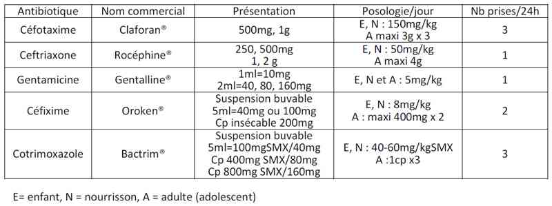
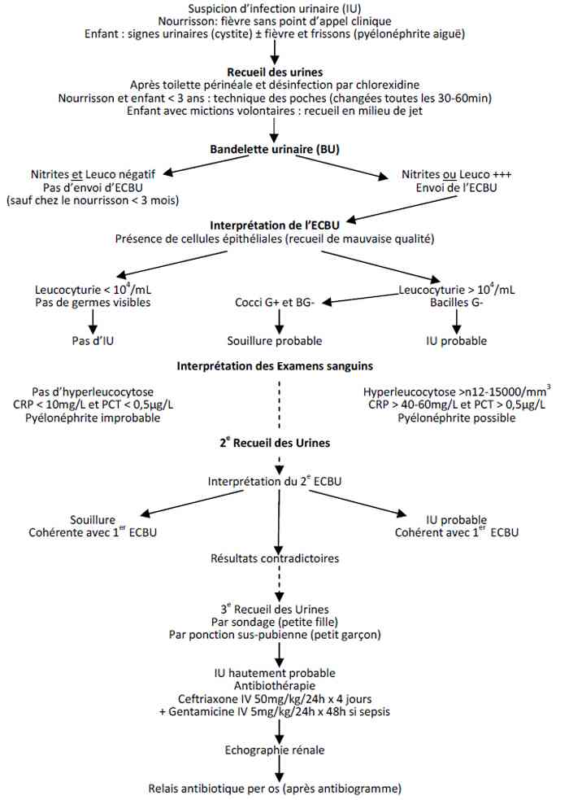

Bienvenue Sur Medical Education
Infections urinaires de l'enfant
EnfantSpécialité : genito-urinaire / infectieux / pédiatrie /
Points importants
- Les infections urinaires (IU) sont fréquentes en pédiatrie
- Une uropathie est retrouvée dans environ un tiers des IU (reflux vésico-urétéral – RVU - dans 90% des cas), mais celle-ci n’introduit pas de changement dans leur prise en charge
- La flore intestinale est le réservoir des germes impliqués dans les IU, mais seuls certains types d’E. coli sont uropathogènes, exprimant des pili d’adhésion aux récepteurs des cellules uro-épithéliales
-
On distingue :
- les cystites, IU basses localisées à la vessie, sans réponse inflammatoire fébrile
- les pyélonéphrites aiguës, IU ascendantes avec réponse inflammatoire fébrile, risque de bactériémie (frissons) et de cicatrices rénales
Présentation clinique / CIMU
SIGNES FONCTIONNELS
Généraux
- Fièvre élevée (>39°C), frissons, marbrures (pyélonéphrite aiguë) ou apyrexie (cystite aiguë)
- Anorexie (mauvaise prise des biberons)
Spécifiques
- Urinaires : brûlures mictionnelles, dysurie, pollakiurie, parfois hématurie (cystite hémorragique)
CONTEXTE
Terrain
- Souvent aucun
- Malformation urinaire associée (RVU le plus fréquent), parfois de diagnostic anténatal
Traitement usuel
- Antipyrétiques
- Antibiotiques
Antécédents
- IU récidivantes
- Malformations urinaires
Facteurs de risque
- Age < 3 mois (risque de sepsis)
- Malformations rénales et des voies urinaires (risque d’abcès)
- Interventions urologiques antérieures (dérivation urinaire, germes résistants)
- Immunodépression (risque de sepsis)
EXAMEN CLINIQUE
- Souvent l’examen clinique est normal : devant toute fièvre isolée, sans point d’appel clinique, la règle est de pratiquer une BU sur des urines recueillies stérilement (cf. signes biologiques)
- Parfois l’examen clinique objective une miction sans jet au goutte à goutte (évocatrice de valves de l’urètre postérieur chez le garçon), un globe vésical ou une masse lombaire (évocatrice d’une hydronéphrose)
EXAMENS PARACLINIQUES SIMPLES
- BU sur urines fraîches recueillies stérilement (cf. signes biologiques)
CIMU
- Tri 2-3
Signes paracliniques
BIOLOGIQUES
Le diagnostic d’IU repose sur l’ECBU
-
La qualité du prélèvement d’urine est essentielle pour le diagnostic :
- le risque majeur de contamination par la flore fécale et péri-urétrale rend indispensable une désinfection soigneuse préalable de la vulve, du prépuce et du gland, d’abord au savon, ensuite par un antiseptique (Dakin® dilué, chlorexidine®) suivi d’un rinçage à l’eau
- le geste infirmier ne doit pas être délégué à des parents
- chez l’enfant < 3 ans, la technique des poches doit être privilégiée pour réaliser le dépistage par BU. Un temps de pose < 30 min réduit les risques de contamination
- chez l’enfant > 3 ans qui contrôle ses mictions, le prélèvement d’urine en milieu de jet doit être privilégié
- Une BU négative (leucocytes et nitrites) permet d’exclure une IU avec une VPN de 97%. Toutefois, l’ECBU doit être systématique chez le nourrisson < 3 mois avec une fièvre isolée
- Une BU positive (leucocytes ou nitrites) doit faire adresser l’ECBU rapidement au laboratoire. Les urines doivent être ensemencées dans les 20 min qui suivent le prélèvement à T° ambiante, sinon elles doivent être conservées à 4°C
-
Interprétation de l’examen direct :
- la présence de cellules épithéliales signe un prélèvement de mauvaise qualité
- une leucocyturie > 104/mL traduit la réponse inflammatoire à l’IU
- la présence de bactéries visibles à l’examen direct après coloration de Gram sur une urine non centrifugée examinée au fort grossissement en immersion (x 1000) correspond à une bactériurie > 105 UFC/mL
- si l’examen direct après coloration de Gram identifie plusieurs types de germes, une contamination fécale est probable. Un 2ème ECBU sur des urines prélevées par sondage rétrograde ou par ponction sus-pubienne est nécessaire
-
Le cathétérisme vésical rétrograde :
- recommandé chez la petite fille, il peut être utilisé chez le petit garçon
- utiliser une sonde gastrique ou urinaire souple (5Fr)
- ne pas décalotter le gland désinfecté, introduire la sonde gastrique par le méat urinaire, sans jamais forcer, d’abord la verge tenue droite et relevée, puis abaissée afin de franchir le coude prostatique
- éliminer les premières gouttes contaminées par la flore urétrale
-
La ponction sus-pubienne :
- recommandée chez le garçon, après pose de crème EMLA® pendant 1h-1h30 et sédation par MEOPA®. Piquer au-dessus du pubis avec une angulation céphalique de 10-15°
- utiliser une aiguille fine (22G ou 20G) montée sur une seringue de 5mL
- sa réalisation sous échographie permet d’éviter les ponctions « blanches » d’une vessie vide
-
Interprétation de la culture :
- une bactériurie > 105/mL est nécessaire pour affirmer l’IU (> 103/mL sur des urines prélevées par sondage vésical ou ponction sus-pubienne) à un seul germe. Plusieurs germes indiquent une souillure.
- une pyurie > 104/mL accompagne cette bactériurie
- Des signes inflammatoires biologiques : hyperleucocytose, élévation franche de la CRP/PCT signent l’IU haute (pyélonéphrite aiguë)
IMAGERIE
Ecographie rénale
-
Il est recommandé de pratiquer une échographie rénale au décours d’une pyélonéphrite aiguë. Elle est généralement pratiquée rapidement si :
- l’enfant a été septique
- il existe des signes biologiques d’insuffisance rénale
- l’enfant reste fébrile malgré une antibiothérapie adaptée > 24-48h
- Sinon, elle est réalisée dans les 48 heures
Cystographie
- La cystographie par voie rétrograde ou sus-pubienne n’est plus systématique au décours d’une première pyélonéphrite aiguë, mais en cas d’IU avec des signes de sepsis ou ne répondant pas au traitement habituel, s’il s’agit d’un 2ème épisode ou s’il existe des anomalies échographiques significatives
-
Les anomalies échographiques qui incitent à réaliser une cystographie sont :
- une dilatation calicielle ± associée à un amincissement du parenchyme rénal
- une dilatation pyélique > 10 mm (mesure du pyélon intra-sinusal entre les « lèvres du rein » sur une coupe transversale)
- un ou deux uretère(s) dilaté(s) > 3mm
- un foyer de néphrite, un abcès intra-rénal
- des parois vésicales épaissies
Diagnostic étiologique
- Antibiogramme
Diagnostic différentiel
Fièvre sans point d’appel clinique, notamment chez le nourrisson < 3 mois
-
Penser à :
- otite (examen des tympans)
- pneumonie (auscultation pulmonaire et radio de thorax)
- méningite (examen clinique et PL au moindre doute)
- bactériémie (hémoculture)
- Urines souillées, notamment chez l’enfant < 3 ans (si les poches ne sont pas changées toutes les 30min à 1h, la contamination est inévitable)
Réaliser un 2e ECBU (après BU), voire un 3e par cathétérisme vésical rétrograde ou ponction sus-pubienne, plutôt que de débuter une antibiothérapie inutile
Traitement
TRAITEMENT INTRAHOSPITALIER
Stabilisation initiale
- Si choc septique sur pyélonéphrite
Suivi du traitement
- Paracétamol en cas de fièvre
-
Cystite aiguë :
- cotrimoxazole per os. Contre-indiqué si âge < 1 mois
- cefixime per os (AMM > 3ans) en 2ème intention
- durée de traitement : 5 jours maximum
-
Pyélonéphrite aiguë :
- ceftriaxone IV x 2-4 jours
- chez le nouveau-né < 28j, remplacer ceftriaxone par céfotaxime IV
- addition de gentamicine IV dans les formes sévères (< 3 mois, uropathie malformative, sepsis associé) x 2-4 jours
- après obtention de l’apyrexie, relais per os par cefixime ou cotrimoxazole en 2 prises, sauf si l’enfant est âgé < 1 mois où l’antibiothérapie IV doit durer 10 jours
- durée de traitement 10 à 14 jours
MEDICAMENTS
Antibiotiques
 _738 Tableau Posologie des antibiotiques dans les infections urinaires de l'enfant
Antipyrétiques
-
Paracétamol :
-
par voie orale 10 mg/kg/4h ou 15 mg/kg/6h :
- Efferalgan® suspension buvable ou sachets à 80, 150 et 250 mg
- Doliprane® suspension buvable ou sachets à 100, 150, 200 et 300 mg)
-
pour les enfants dont le poids est > 50 kg :
- 1/2 à 1 comprimé à 1 g par prise, à renouveler en cas de besoin au bout de 4 heures minimum. Il n'est généralement pas nécessaire de dépasser 3 g de paracétamol/j, soit 3 comprimés.
- par voie IV pro-paracétamol 15 mg/kg/6h (Perfalgan® 1 Flacon = 50 mL = 500 mg) en IVL sur 15 min
-
par voie orale 10 mg/kg/4h ou 15 mg/kg/6h :
-
Ibuprofène (> 3 mois) :
- par voie orale 10 mg/kg/8h
- Advil®
- Nureflex®
Surveillance
CLINIQUE
- Température cutanée
- Vomissements
- Prise alimentaire (poids 1 fois/j si hospitalisé)
- Paramètres vitaux (FR-FC-SpO2-PA/3-6 heures, si hospitalisé)
PARACLINIQUE
-
Si persistance de la fièvre ou récidive des signes infectieux à 48h :
- ECBU de contrôle avec bilan infectieux (NFS plaquettes, CRP, hémoculture)
- Si l’enfant est apyrétique, il n’est plus recommandé de réaliser un ECBU de contrôle à 48h de traitement ou après la fin du traitement
Devenir / orientation
CRITERES D’ADMISSION
En réanimation
- Choc septique sur pyélonéphrite
En service d’hospitalisation
- Age < 3 mois (risque de sepsis)
- Malformations rénales et urogénitales (risque de sepsis et d’abcès rénal)
- Interventions urologiques antérieures (risque de sepsis et de germes résistants au traitement antibiotique habituel)
CRITERES DE SORTIE
- Apyrexie
- Bonne prise alimentaire
- Echographie rénale sans signes de néphrite/abcès
- Absence de signes biologiques d’insuffisance rénale
- Parents fiables pour surveillance au domicile et poursuite du traitement antibiotique per os
ORDONNANCE DE SORTIE
- Paracétamol (si fièvre > 38,5° C ou douleurs)
- Céfixime x 2/j ou cotrimoxazole 3 fois/j, pendant 10 jours
-
Cystographie par voie rétrograde ou sus-pubienne à distance de l’épisode (1 mois) :
- en cas d’IU avec des signes de sepsis ou ne répondant pas au traitement habituel
- s’il s’agit d’un 2e épisode
- ou s’il existe des anomalies échographiques significatives
-
Si IU récidivantes :
- il n’y a pas de consensus sur l’intérêt et la durée de la prophylaxie antibiotique
- elle n’a aucune efficacité démontrée chez les enfants présentant un RVU sévère (grades 3-5) (de nombreux essais multicentriques randomisés démontrent l’équivalence chirurgie vs. antibiothérapie prolongée en termes d’IU fébriles ou de cicatrices rénales)
- favorise la résistance des bactéries des IU
-
si elle est décidée, les recommandations sont d’utiliser :
- cotrimoxazole (contre-indiquée chez enfant < 1 mois) per os 5/1 ou 10/2 mg/kg/j en 1 à 2 prises
- ou nitrofurantoïnes (> 6 ans) per os 1-2 mg/kg/j en 1 prise
RECOMMANDATIONS DE SORTIE
- Surveillance de la prise alimentaire (poids) chez le nourrisson
- Consulter à nouveau en cas de vomissements à répétition, altération de l’état général, fièvre avec frissons
- Bonne hygiène périnéale, éducation vésicale et boissons abondantes
Mécanisme / description
- Les IU affectent environ 1% des enfants de moins de 2 ans, avec une prédominance masculine durant les premiers mois de vie et une prédominance féminine ensuite
- La colonisation microbienne suit le chemin inverse de l’écoulement normal de l’urine : périnée > urètre > vessie > uretère > bassinet > rein
- Une infection dans les trois premières étapes donne lieu à une IU basse (cystite), dans les étapes suivantes à une IU haute (pyélonéphrite)
- Les infections parenchymateuses par voie hématogène sont exceptionnelles
-
Plusieurs facteurs favorisent l’IU en pédiatrie :
- chez le nourrisson (propreté non acquise) : les couches, le prépuce étroit, l’immaturité vésicale
- chez l’enfant (propreté acquise) : troubles mictionnels, vulvite, oxyurose, mauvaise hygiène.
Algorithme
- Algorithme de prise en charge d’une infection urinaire chez l’enfant
 _739 Algorithme Algorithme : prise en charge d'une infection urinaire chez l'enfant
Bibliographie
- Diagnostic et antibiothérapie des infections urinaires bactériennes communautaires du nourrisson et de l’enfant. Recommandations et Argumentaire. AFSSAPS Février 2007
- AAP. Practice parameter : The diagnosis, treatment, and evaluation of the initial urinary tract infection in febrile infants and young children. Pediatrics 1999; 103:843-52
- Wheeler D, et al. Antibiotics and surgery for vesicoureteral reflux: A meta-analysis of randomised controlled trials. Arch Dis Child 2003; 88:688-94.
- Moorthy I, et al. The presence of vesicoureteric reflux does not identify a population at risk for renal scarring following a first urinary tract infection. Arch Dis Child 2005; 90:733-6.
- Wald ER. Vesicoureteric reflux: the role of antibiotic prohylaxis. Pediatrics 2006; 117:919-22.
- Jodal U, et al. Ten-year results of randomized treatment of children with severe vesicouretral reflux. Final report of the International Reflux Study in children. Pediatr Nephrol 2006; 21:785-92.
- Murer L, et al. Embryology and genetics of primary vesico-urteric reflux and associated renal dysplasia. Pediatr Nephrol 2007; 22:788-97.
- Baumer JH, Jones RWA. Urinary tract infection in children, NICE. Arch Dis Child Educ Pract Ed 2007; 92: 189-92
Auteur(s) : Jean-Christophe MERCIER, Patricia MARIANI-KURDJIAN